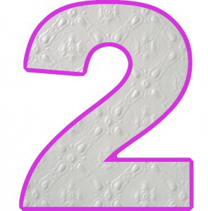

Facebook
Pinterest
Instagram
ES
EN
DE
☰ Menu
Home
The House
Accessories
Decorate
Instruccions
Illustration
Custom water bottles
Notebook crafts and activities 01
App NOT ONLINE RIGHT NOW
Blog
Holidays
Christmas
Easter
Halloween
Carnival & costumes
Valentine’s Day
Birthday
Mother’s/Father’s Day
Back to school
Seasons
Spring
Summer
Autumn
Winter
What to do
Toys
Games
Printables
Food & recipes
Decoration
Painting
Experiments
Outdoors
Learning
Animals
Gifts & jewellery
Building & tricks
Other crafts
Material
Paper
Cardboard
Paper rolls
Recycling
Stones
Leaves & nature
Fabric & sewing
Home
›
Blog
›
Occasion
Occasion
Category
Activity
Earthworm
Occasion
Snow garland
Occasion
Snowy owl
Occasion
Snow globe 02
Occasion
Star
Occasion
Paper trees
Occasion
Little houses
Occasion
Christmas tree
Occasion
Christmas Decoration
Occasion
Christmas Decoration
Occasion
Christmas card
Occasion
Advent calendars 03
Activity
snow
Occasion
Hands
Occasion
Bat
Occasion
Day of Saint Dionysius
Occasion
Halloween shirt
Occasion
Halloween headdress
Occasion
2 years

Activity
Shells
Occasion
Ice blocks
Occasion
Silkworms
Occasion
Mother`s Day
Occasion
Mother
← Newer
Page 5 / 6
Older →